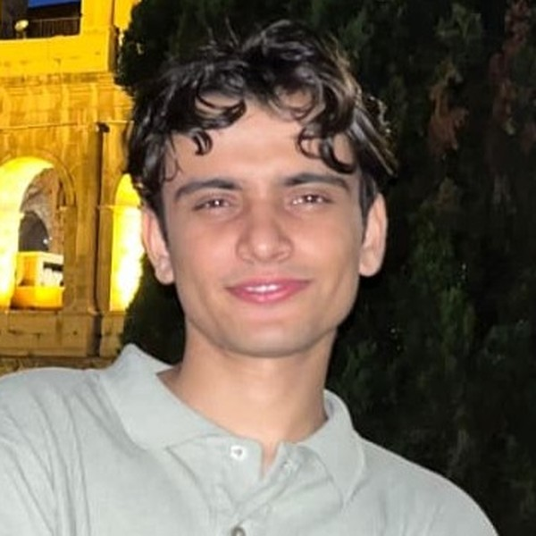

SANDESH CHAPAGAIN
Backend & Infrastructure Engineer · Real-time media and distributed systems
sendmailtodex@gmail.com·(+39) 344 594 6149·Rome, Italy·Open to relocation
iamdex.xyz·github.com/Dexasan
Profile
Backend and infrastructure engineer working on real-time media. Founder and sole engineer of
Ditch, a browser-based streaming studio in production that composes, encodes and
goes live to YouTube, Twitch, TikTok and Kick from a single tab. I also build small, inspectable
systems tools in the open. Second-year Engineering Sciences at Tor Vergata, looking for
infrastructure and product engineering roles.
Selected Work
Jan 2026 – Present
Ditch — Browser-Based Live Streaming Studio
Founder & Sole Engineer · Startcup Lazio 2026 · Live in production
- Studio in the browser: canvas compositor with scenes, layers and a live
preview, holding 30fps even with the tab backgrounded — no install, no hardware encoder.
- Encode once, push everywhere: WebCodecs H.264/Opus encoding streamed to a
custom relay that fans out to four platforms through ffmpeg; one destination failing never
drops the others.
- Platform: Fastify API, Socket.io realtime layer, Supabase Postgres with RLS —
a TypeScript monorepo of four services on Vercel and Railway.
- Reliability: bounded upload buffer with ffmpeg backpressure, single-flight
auto-reconnect, and local JWT verification that kept traffic serving through an auth outage.
Open Source
- PulseForge — durable job orchestration with retries, idempotency and dead letters. TypeScript
- SignalScope — WebRTC observability: quality scoring and anomaly diagnosis. TypeScript
- DriftSafe — static risk analysis for PostgreSQL migrations, SARIF output for CI. Python
- CanaryKit — feature flags with deterministic bucketing and explainable decisions. TypeScript
- LocalLens — citation-first local retrieval, hybrid ranking, no cloud calls. TypeScript
- VerityLedger — double-entry ledger: integer money, hash-chained audit log. Python
- ArchScale — capacity planning for throughput, storage, topology and cost. TypeScript
- Roadrash — pseudo-3D browser racer on Canvas 2D, no game engine. TypeScript
Experience
Jun – Nov 2024
Network Support Intern · Intrasoft Networking Solutions, Nepal
Diagnosed client network faults, monitored with Wireshark and Nagios, configured routers and switches.
Jul 2023 – Jun 2024
Marketing & Growth Manager · Pathik Gyan Niketan, Nepal
Digital presence across three platforms; Meta and Google Ads campaigns with ROI tracking.
Aug 2022 – Jun 2023
Co-creator & Growth Lead · BarcaBuzz
Grew a football community to 100K+ followers organically on a tracked, A/B tested content pipeline.
Education
Dec 2024 – Present
B.Sc. Engineering Sciences · Università di Roma Tor Vergata
Year 2 of 3 · Mathematics, Physics, Electronics, Computing, Control Systems
Technical Skills
LanguagesTypeScript · JavaScript · Python · SQL · Go and C (foundational)
Real-timeWebRTC · WebCodecs · RTMP · ffmpeg · Canvas API · Web Workers · WebSockets
BackendNode.js · Fastify · Socket.io · PostgreSQL · Supabase (Auth, RLS) · REST · JWT
FrontendNext.js (App Router) · React · Zustand · Tailwind CSS
InfraDocker · Railway · Vercel · Turborepo · GitHub Actions · Git · Linux
SpokenNepali (native) · English (C2) · Hindi (C2) · Italian (B1)